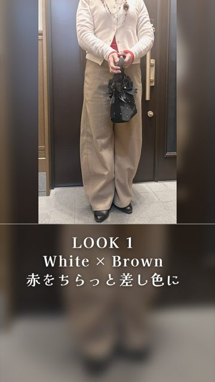
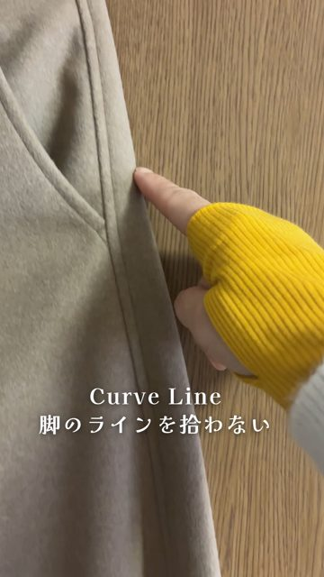
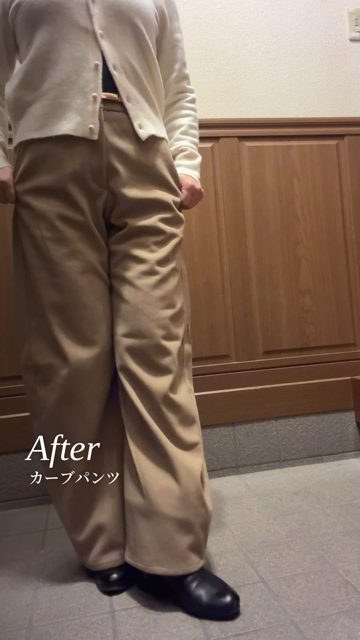
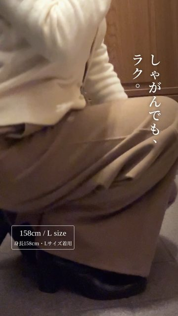
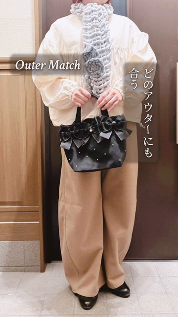
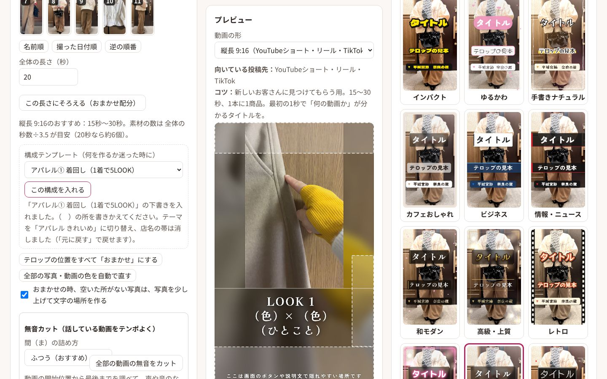

SNS Video Portfolio
スマートフォンでの撮影から、企画・編集・投稿まで。人気アカウントの数字を分析し、伸びる型と自分ならではの目線を組み合わせて、きれいめ大人カジュアルのリールを作っています。
着用モデル・撮影も本人です。ブランドのロゴや値札は映さないようにしています。
職業訓練の実習先、株式会社いち屋（奈良県奈良市。縁日用品・お土産商品、お土産店「奈良の蔵」など）で、ネットショップやSNS用の商品紹介動画をCapCutで編集しました。そのうち4本を、会社の許可をいただいて掲載しています。
タンバリン約13秒。色違い3種類とサイズを、テンポよく見せました
タコ焼きけん玉約16秒。手に持った大きさと、遊んでいる様子を入れました
三笠・葛のお菓子約46秒。お店「奈良の蔵」の商品を、店内の様子と一緒に紹介しました
風船ヨーヨー約78秒。作り方を手順ごとの番号つきテロップで説明しました
「どうすれば届くか」を毎回ふり返り、撮り直しと編集を重ねました。

v1写真で2コーデ。人の動きが少なく、良さが伝わりにくかった

v2商品紹介型に変更。形・生地・ポケットをアップで見せた

v3悩みの言葉と、いつものパンツとの比較を追加

v4身長・サイズを表示し、縦書きと英字で文字を整えた

v5自分でCapCutで編集し直し。カーブの形とトップス・アウターとの合わせを追加し、文字の位置をそろえた
2026年11月20日にInstagramの表示を確認。直近12本のリール再生数の中央値 ÷ フォロワー数。再生数は「〇万」表示のため概数です。
分析をもとにした改善提案書（2ページ）もあります。面接でお見せできます。

AI（Claude Code）を使って作った、ブラウザで動く動画編集ツールです。毎日の投稿を早く、同じ品質で作るために作りました。
スマートフォン撮影、CapCut・Editsでの編集、Instagramリールの企画と投稿。個人アカウントでリールの再生数はフォロワー数の約60%
Photoshopでの商品画像加工、Illustrator、Webデザイン（職業訓練 Webクリエイター実践科 修了）
Excel・Wordでの資料作成と数字のまとめ。Claudeを使った制作の効率化